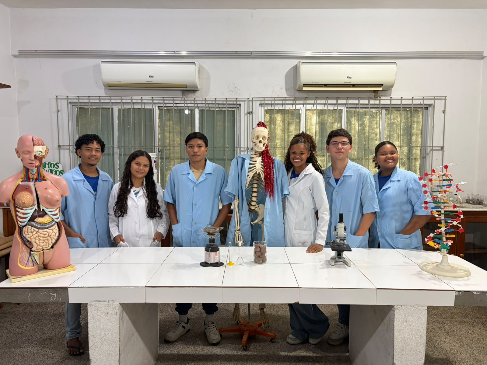
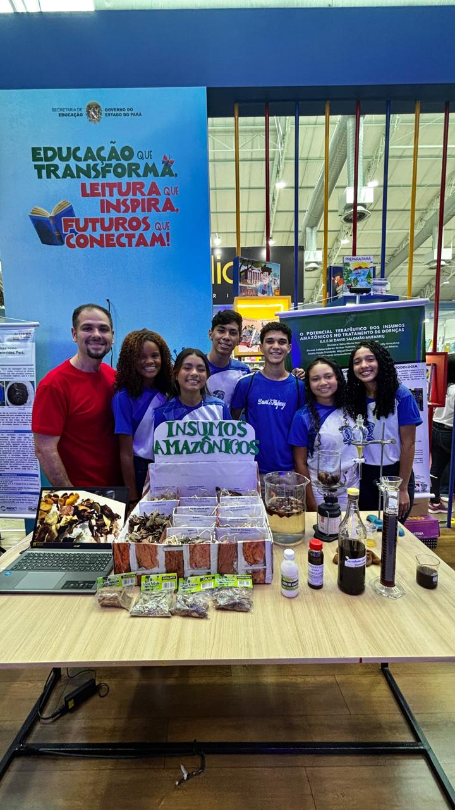

Feira Cientifica 2026
Pontencial tecnológico e cientifico da Amazônia
As turmas mostram como ciência e tecnologia podem nascer do território amazônico: da biodiversidade aos rios, da energia aos saberes de quem vive aqui.

08/10/26 Data
14h ás 17h30 Hóra
Av. Alm. Tamandaré, 256 - Cidade Velha, Belém - PA, 66023-300 Local

3011 - Potencial terapêutico dos insumos amazônicos
Os veteranos abordarão temas como a extração do óleo de andiroba, produção de garrafadas e demais insumos amazônicos além da valorização da cultura e saberes ancestrais.
VisitarCarregando projetos…